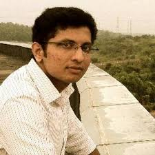
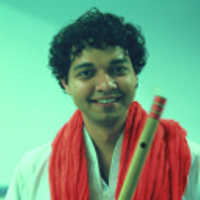

<link rel="import" href="../bower_components/polymer/polymer.html">

<link rel="import" href="../bower_components/paper-card/paper-card.html">

<link rel="import" href="talk-styles.html">

<dom-module id="talks-guest-lectures">
<style include="talk-styles"></style>
<template>


    <style>

    :host {
      margin-top: 32px;
    }

      h2,h3 {
        font-weight: 400;
      }

      a {
        text-decoration: none;
        color: inherit;
      }

      paper-button {
        background-color: #4285f4;
        color: white;
      }


      .btn-cntr {
        margin-top: 32px;
        margin-bottom: 32px;
        text-align: center;
      }

      .title {
        display: flex;
        align-items: center;
        height: 70px;
        width: 100%;
        margin-bottom: 40px;
      }

      .icon {
        width: 70px;
        height: 70px;
        padding-left: 16px;
      }

      .event-name {
        font-size: 34px;
        padding-left: 16px;
        font-weight: 600;
      }

      p {
        margin: 0;
      }

      .description {
        margin-bottom: 50px;
      }

      section {
        display: flex;
        margin-bottom: 32px;
      }

      section div {
        padding-top: 16px;
        padding-left: 16px;
      }

      .padd-top {
        padding-top: 16px;
      }

      .section-icon {
        height: 160px;
      }

      .contacts {
        padding-right: 16px;
        padding-bottom: 16px;
        background-color: #fdf9f6;
        border-radius: 12px;
        border-left: 10px solid #d3d2be;
        flex: 1;
      }


      @media( max-width: 600px) {
        h2,h3,p {
          padding: 0 16px;
        }

        section {
          display: block;
        }

        section div {
          padding-left: 0;
        }
      }

      :host {
        display: block;
        margin-top: 0;
      }

      .container {
        width: 100%;
        max-width: 980px;        
        margin: auto;
      }

      .icon-div {
        background: #259fae;
      }

      .icon-pic {
        display: block;
        margin: auto;
        max-width: 100%;
      }

      .description {
        margin-top: 32px;
        font-size: 18px;
      }

      .dp {
        border-radius: 100%;
        display: block;
        margin: auto;
        height: 200px;
      }

      h2 {
        margin-top: 100px;
        text-align: center;
      }

      h3 {
        text-align: center;
      }

    </style>

    <div class="container">

  <h1>Guest Lectures</h1>

    <div class="description">
      <p class="description">Here is an opportunity to get inspired motivated with a series of talks encompassing fervent inspiration and motivation from select speakers crossing different walks of life. The main proponents of the event are those persons who stand out in their respective fields, with a remarkable vision of the future. Guest​ Lectures​ enables the spread of ideas and thoughts, to improve the appreciation of art and scientific temper. Guest Lectures is  categorised into three sections: INSPIRE​, INNOVATE​ and ENGINEER​. It is dais where the lectures may help the young minds to have an outlook in utilising their creativity, ambition and skills. An opportunity to engage the student community with industry stalwarts, Guest​ Lectures is all about an interaction with some of the best minds in the world, at the helm of change.</p>
    </div>


      <h1>Speakers</h1>

      <h2>Arjun R Pillai</h2>
      
      <h3>Inspire</h3>
      <p class="description">Arjun R Pillai is the co-founder and CEO of Profoundis. Working in the interesting domain of Natural Language Processing, Text Analytics, and more, he always works with the problems around him and tries to solve those problems with the best solutions. A Graduate from the College of Engineering, Chengannur, it was during his first year in corporate world that the thought of ‘doing something of my own’ started gripping him. Thus without any prior knowledge about companies, start-ups, entrepreneurship, etc., him, along with three of his college mates started PROFOUNDIS.</p>
<p class="description">It was during marketing and selling of one of their failed products, he noticed the problem and decided to solve the problem with a product- VIBE. It is one of their most successful products, which delivers holistic, accurate, and relevant prospect and customer information to improve enterprise sales and marketing productivity. He currently works as the Head of Data Strategy at FullContact Inc. He is also an Executive Committee Member of IEEE Global Member Benefits Portfolio Committee. Being an active member of IEEE, he works with students, young professionals, and engineers to make the world a better place for all.</p>


      <h2>Nitesh Kadyan</h2>
      
      <h3>Innovate</h3>
      <p class="description">Nitesh is a computer scientist, a hardware hacker and an amateur flutist. He likes to build stuff using laser cutting, 3D printing, leds and junk hardware. He has made his own 3D printer for printing with edible materials like chocolate and halva using opensource tools. He also works in robotics. As an exchange student, he has worked with Professor Raul Rojas at Free University Berlin, and programmed a simultaneous localization and mapping (SLAM) algorithm for a small autonomous car. At IIIT Bangalore, he has worked on programming a collision avoidance mechanism for the prototype of an autonomous wheelchair using bio-inspired collision avoiding behavior of a grasshopper.</p>
      <p class="description">He is the Co-founder Graviky Labs Pvt Ltd. Graviky Labs is a spinoff via MIT Media Lab. They fuse disciplines, technologies, design thinking to build high impact deployable systems, products and visions.
Some of his achievements include receiving the Campus Diaries 25 Under 25 award, being Design and Innovation fellow at MIT Media Lab India initiative. He has participated in MIT Global Startup Labs 2014, and in MIT Media Lab Design and Innovation workshop 2015. He was also one of the speakers at TedxIIFT Delhi 2015, and at The Goa Project 2015.</p>


      <h2>Ranjith Tharayil</h2>
      
      <h3>Engineer</h3>
      <p class="description">Ranjith is an accomplished innovator and an Agile technical consultant with over 10+ years of experience in the software industry. He specializes in strategic intelligence and planning, business transformation, and collaborative culture. He has been an integral part of the R & D departments in large scale product companies and has 8 patents on software architecture, Human Computer Interaction, image processing and graphics.He has got several patents in the software field.</p>
</template>
<script>
	Polymer({
		'is': 'talks-guest-lectures'
	});
</script>
</dom-module>